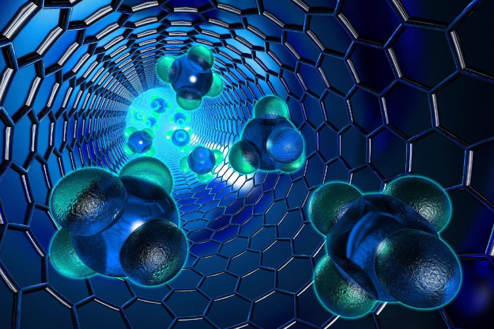

Оптические КомпьютерыОпти́ческие или фото́нные вычисли́тели — гипотетические вычислительные устройства, вычисления в которых производятся с помощью фотонов, излучаемыми лазерами или светодиодами. Большинство современных исследований направлено на замену традиционных (электронных) компонентов компьютера на их оптические эквиваленты. Подробнее |
БиокомпьютерыБиокомпьютер (также биологический компьютер, молекулярный компьютер) — компьютер, который функционирует как живой организм или содержит биологические компоненты. Создание биокомпьютеров основывается на направлении молекулярных вычислений. В качестве вычислительных элементов используются белки и нуклеиновые кислоты, реагирующие друг с другом. Подробнее |

НанотехнологииНанотехноло́гия — область фундаментальной и прикладной науки и техники, включающая теоретическое обоснование, практические методы исследования, анализа и синтеза, а также методы производства и применения продуктов с заданной атомной структурой путём контролируемого манипулирования отдельными атомами и молекулами. Подробнее |